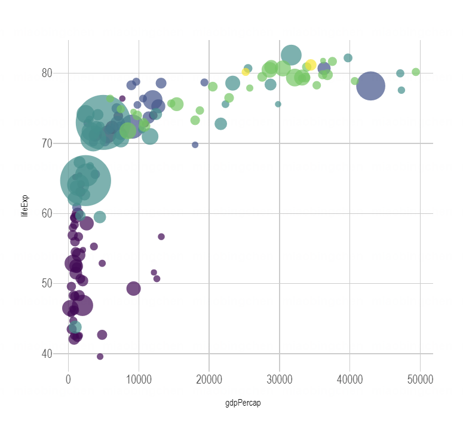

1 for example:
par(mar = c(0, 1, 0, 1))

This is an R Markdown document. Markdown is a simple formatting syntax for authoring HTML, PDF, and MS Word documents. For more details on using R Markdown see http://rmarkdown.rstudio.com.
embed an R code chunk like this:
##p <- data %>%
## mutate(gdpPercap=round(gdpPercap,0)) %>%
## mutate(pop=round(pop/1000000,2)) %>%
## mutate(lifeExp=round(lifeExp,1)) %>%
##
##
## arrange(desc(pop)) %>%
## mutate(country = factor(country, country)) %>%
##
##
## mutate(text = paste("Country: ", country, "\nPopulation (M): ", pop, "\nLife Expectancy: ", lifeExp, "\nGdp per capita: ", gdpPercap, sep="")) %>%
##
##
## ggplot( aes(x=gdpPercap, y=lifeExp, size = pop, color = continent, text=text)) +
## geom_point(alpha=0.7) +
## scale_size(range = c(1.4, 19), name="Population (M)") +
## scale_color_viridis(discrete=TRUE, guide=FALSE) +
## theme_ipsum() +
## theme(legend.position="none")
##
##pp <- ggplotly(p, tooltip="text")
##pp
